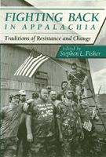

Citizen resistance and struggle in Appalachia since 1960
Citizen resistance and struggle in Appalachia since 1960


 Citizen resistance and struggle in Appalachia since 1960
Citizen resistance and struggle in Appalachia since 1960

|  |
Fighting Back in AppalachiaTraditions of Resistance and Changeedited by Stephen L. Fisherpaper EAN: 978-0-87722-977-3 (ISBN: 0-87722-977-5) |
Sixteen original essays document the extent and variety of citizen resistance and struggle in the Appalachian region since 1960. The contributors-all organizers or activist intellectuals-describe how and why some of the dramatic Appalachian resistance efforts and strategies have arisen.
Acknowledgments
Introduction – Stephen L. Fisher
Part I: Building Grassroots Citizen Organizations
1. Stopping the Bulldozers: What Difference Did It Made? – Mary Beth Bingman
2. Like a Flower Slowly Blooming: Highlander and the Nurturing of an Appalachian Movement – John M. Glen
3. Racism and Organizing in Appalachia – Don Manning-Miller
4. From Fussin' to Organizing: Individual and Collective Resistance at Yellow Creek – Sherry Cable
5. Save Or Cumberland Mountains: Growth and Change within a Grassroots Organization – Bill Allen
6. Practical Lessons in Community Organizing in Appalachia: What We've Learned at Kentuckians for the Commonwealth – Joe Szakos
7. The Community Farm Alliance in Kentucky: The Growth, Mistakes, and Lessons of the 1980s Farm Movement – Hal Hamilton and Ellen Ryan
Part II: New Strategies in Labor Struggles
8. Appalachian Women Fight Back: Organizational Approaches to Nontraditional Job Advocacy – Chris Weiss
9. The Memory of Miners and the Conscience of Capital: Coalminers' Strikes as Free Spaces – Richard A. Couto
10. Singing Across Dark Spaces: The Union/Community Takeover of the Pittston Coal Company's Moss 3 Coal Preparation Plant – Jim Sessions and Fran Ansley
11. The People's Respirator: Coalition Building and the Black Lung Association – Bennett M. Judkins
Part III: Culture, Class, and Gender in Appalachian Resistance Movements
12. Sowing on the Mountain: Nurturing Cultural Roots and Creativity for Community Change – Guy and Candie Carawan
13. Engendering the Struggle: Women's Labor and Tradition of Resistance in Rural Southern Appalachia – Mary K. Anglin
14. Appalachian Studies, Resistance, and Postmodernism – Alan Banks, Dwight Billings, and Karen Tice
15. Politics, Expressive Form, and Historical Knowledge in a Blue Ridge Resistance Movement – Stephen William Foster
16. Conclusion: New Populist Theory and the Study of Dissent in Appalachia – Stephen L. Fisher
Dissent in Appalachia: A Bibliography – Stephen L. Fisher
Directory of Organizations
List of Contributors
Stephen L. Fisher is Hawthorne Professor of Political Science at Emory and Henry College in Emory, Virginia.
Contributors: Bill Allen, Mary K. Anglin, Fran Ansley, Alan Banks, Dwight Billings, Mary Beth Bingman, Sherry Cable, Guy and Candie Carawan, Richard A. Couto, Stephen William Foster, John M. Glen, Hal Hamilton, Bennett M. Judkins, Don Manning-Miller, Ellen Ryan, Jim Sessions, Joe Szakos, Karen Tice, Chris Weiss, and the editor.
Political Science and Public Policy
© 2015 Temple University. All Rights Reserved. This page: http://www.temple.edu/tempress/titles/879_reg.html.